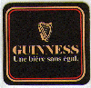

Tout corps plongé dans un flux d'emmerdements pivote de façon à lui offrir
sa surface maximale. Pierre DAC
C.H.O.C., Central Head
Office of the CHOC,
est un condensé de tout ce qui me passe par la tête.
N'hésitez pas à envoyer vos idées pertinentes ici.
Et si l'affaire Roswell était une supercherie ?
 J'adore la Guinness
A ne pas mettre à la portée de tout le monde : la page maison de Lux
Pour 25cl, on dit un demi, pour 50cl, on dit un sérieux, pour 100cl, on dit un formidable ... et pour 33cl ?
Un nouveau genre de sitcom : Papa Interim
Cette affirmation est fausse.
Petit conseil aux poseurs de bombes cinéphiles : évitez de mettre des fils de différentes couleurs, un compte à rebours digital, ... et laissez la possibilité de couper les fils avant la dernière seconde fatidique ...
 J'aime bien faire des montages avec mes amis ...
J'aime bien faire des montages avec mes amis ...

 J'aime bien faire des montages avec mes amis ...
J'aime bien faire des montages avec mes amis ...